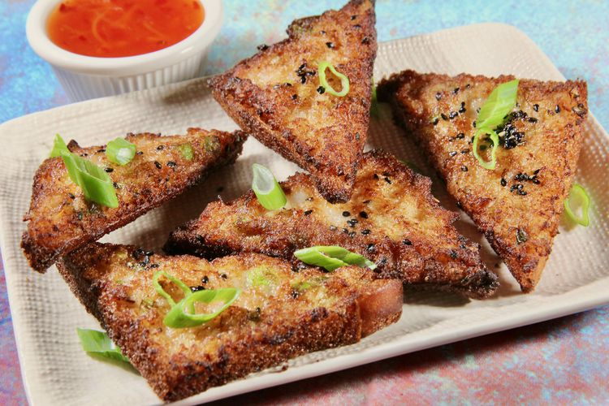

Chinese Prawn Toast
Note: This content is for educational purposes only.
Sourec:
https://www.allrecipes.com/recipe/284074/chinese-prawn-toast/

Description
A popular and savory Chinese appetizer that's so very quick and easy to make.
They're perfect for just about any occasion.
Ingredients
- 8 ounces prawns, peeled and deveined
- 2 tablespoons sliced water chestnuts, drained
- 2 tablespoons green onions, chopped
- 2 teaspoons minced fresh ginger root
- 2 cloves garlic, minced
- ¼ teaspoon salt
- ¼ teaspoon white sugar
- 1 large egg white
- 1 tablespoon cornstarch
- 2 teaspoons low-sodium soy sauce
- 1 teaspoon rice vinegar
- ½ teaspoon sesame oil
- ½ cup vegetable oil for frying
- 6 slices white sandwich bread
- 2 teaspoons black sesame seeds
- 2 tablespoons sweet chili sauce
Method
- Add prawns, water chestnuts, green onions, ginger root, garlic, salt, and sugar to a food processor.
- Whisk egg white, cornstarch, soy sauce, rice vinegar, and sesame oil together in a small bowl and
drizzle over the top of the shrimp mixture. Pulse until smooth, but not pureed, into a prawn mousse.
- Trim crusts off the bread and equally spread the prawn mousse all the way to the edge of each bread slice.
Cut diagonally into 12 halves, and lightly sprinkle with sesame seeds.
- Add oil to a 10-inch skillet so that it's about 1/2 inch deep, and heat to 375 degrees F (190 degrees C) over medium-high heat.
Add 4 of the toasts, prawn-side down, not crowding the pan.
- Fry until toast is golden brown, 30 to 45 seconds; flip and cook bread side for another 15 seconds.
The toasts cook very quickly, so keep your eye on them. Repeat for next batch.
- Transfer to a paper towel-lined rack and serve warm with sweet chili sauce.
Back to index.html